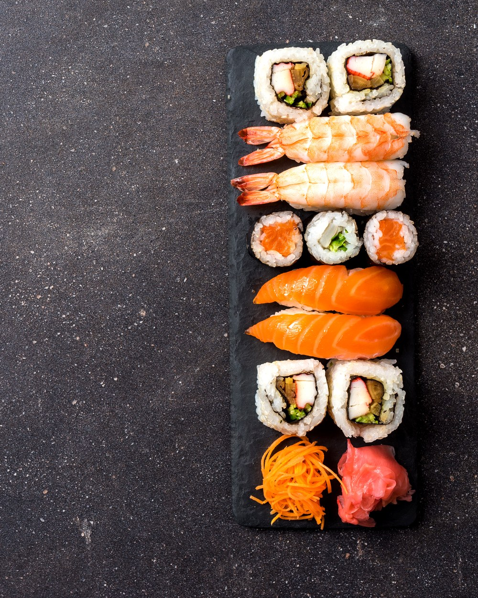
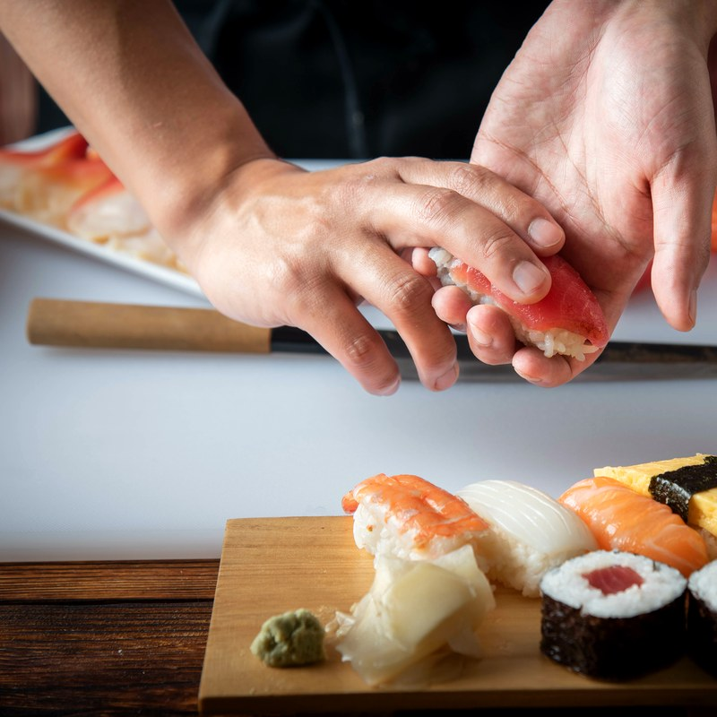
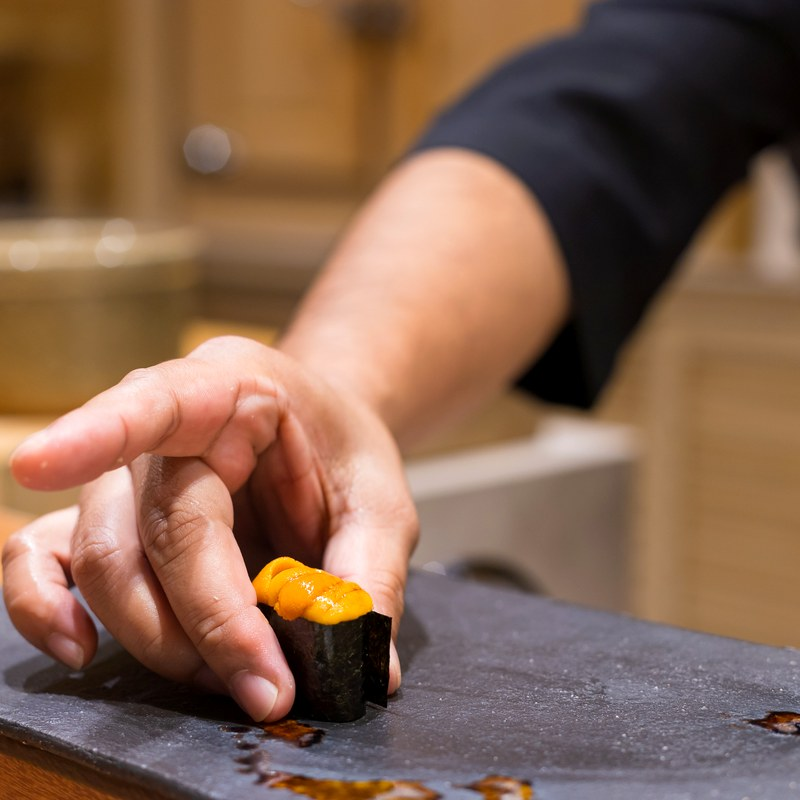
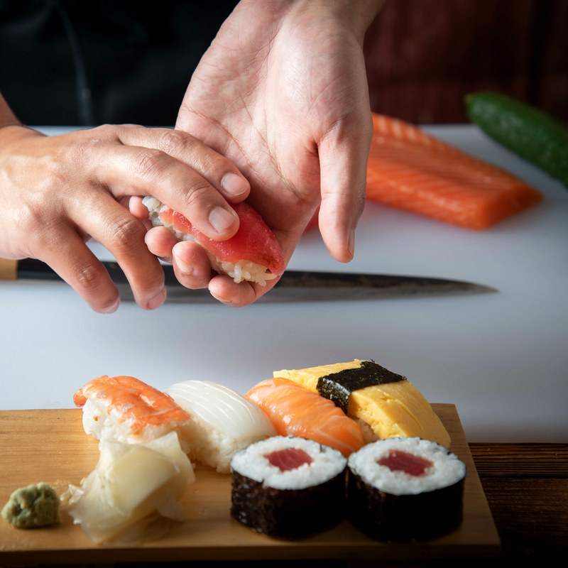
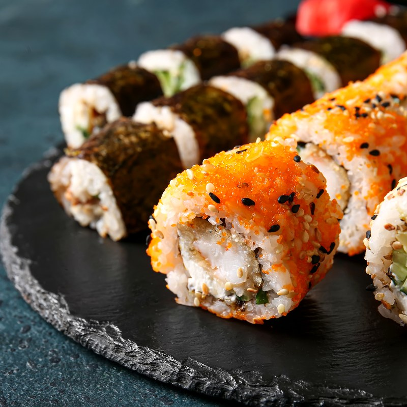
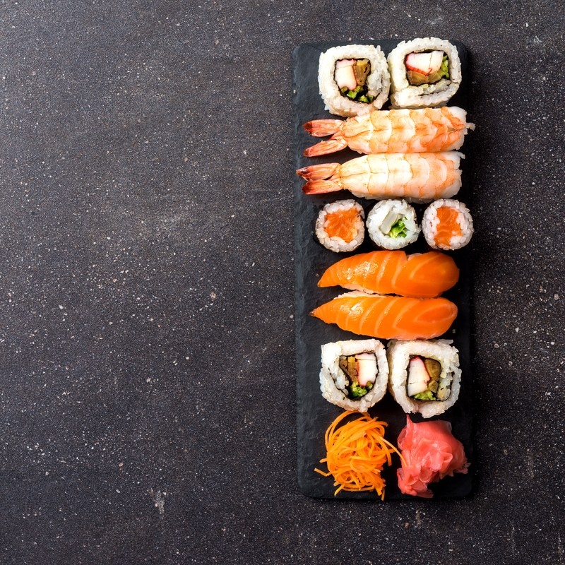
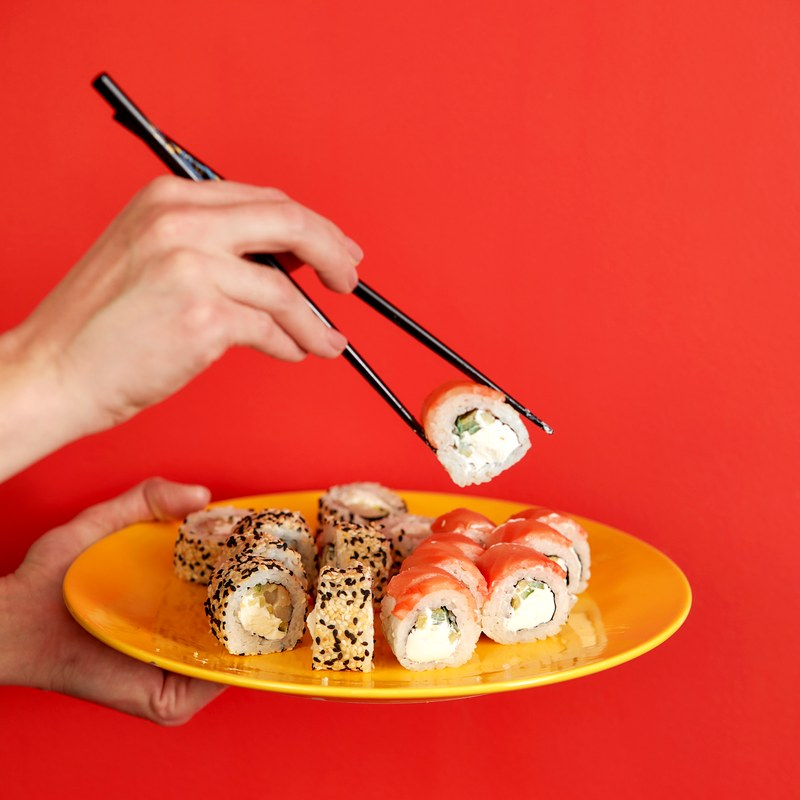

Dix places au comptoir, un poisson livré chaque matin, un riz vinaigré préparé sur place. Kōji, c'est le sushi pensé comme un artisanat, pas comme une chaîne.


Kōji est né d'une idée simple : servir un sushi honnête, sans artifice, dans un cadre qui respecte le geste du chef autant que le produit. Pas de buffet, pas de carte à rallonge — juste dix places, un poisson choisi chaque matin, et un riz préparé selon une recette transmise depuis Tokyo.
Chaque pièce est façonnée à la commande, sous les yeux du client. C'est un choix de rythme autant que de qualité.

Le comptoir
La découpe
Le riz vinaigré
La sélection du jour
Le serviceLe meilleur nigiri que j'ai mangé au Luxembourg. Le riz est parfait, ce qui change tout.
Le comptoir de 10 places donne une vraie ambiance, on sent que chaque pièce est faite pour nous.
Le menu omakase vaut le détour — simple, précis, sans surenchère inutile.
Réservation conseillée — 10 places seulement.
| Mardi — Samedi | 12h00 – 14h00 / 19h00 – 22h30 |
| Dimanche — Lundi | Fermé |